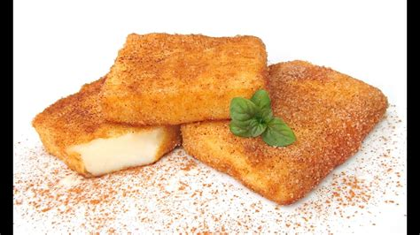

Leche Frita

Ingredientes:
- 1 litro de leche
- 150 g de azúcar
- 100 g de harina
- 4 huevos
- La piel de un limón
- Canela en polvo
- Aceite de oliva suave para freír
Pasos:
- En una olla, calentar la leche junto con la piel de limón y la canela. Llevar a ebullición y retirar del fuego.
- En otro bol, mezclar el azúcar y la harina.
- En otro bol, batir los huevos hasta que estén espumosos.
- Retirar la piel de limón y la canela de la leche y añadir la mezcla de azúcar y harina. Mezclar bien hasta que esté suave.
- Añadir los huevos batidos a la mezcla de leche y harina y mezclar bien.
- Volver a poner la olla al fuego y cocinar la mezcla a fuego medio, removiendo constantemente hasta que espese y se despegue de las paredes de la olla.
- Verter la mezcla en una fuente y dejar enfriar.
- Cortar la mezcla en porciones y pasar por harina.
- Calentar aceite de oliva en una sartén y freír las porciones de leche frita hasta que estén doradas por ambos lados.
- Servir caliente espolvoreada con azúcar y canela.